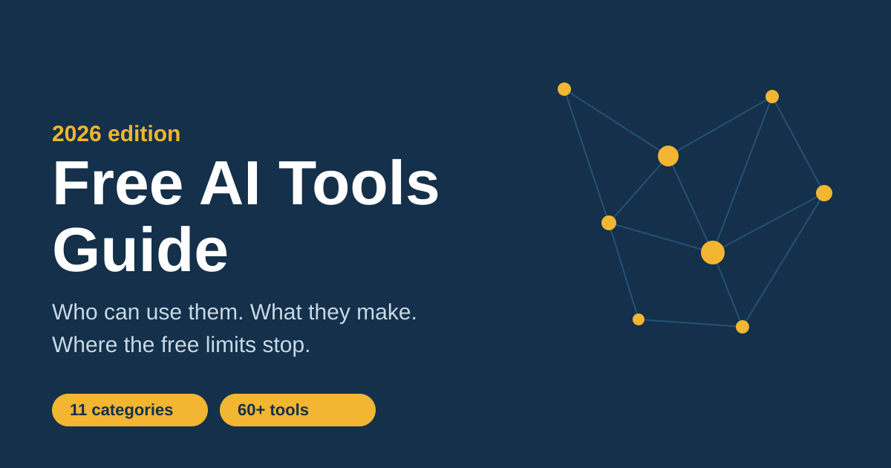

Pick who you are and see which categories fit. Open any row for outputs and typical free-tier limits.
Limits are general patterns, not exact figures. Companies change quotas often, so check each tool’s pricing page before relying on it. Avoid pasting private data into free cloud tools, and verify AI answers.